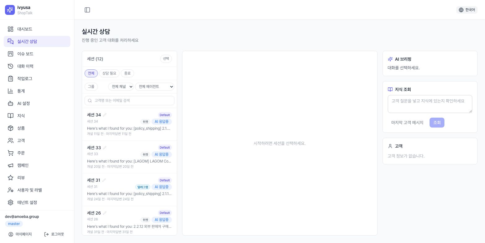
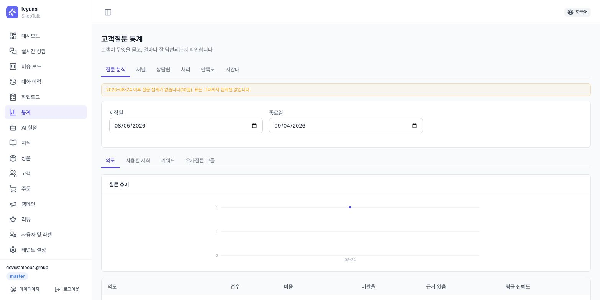
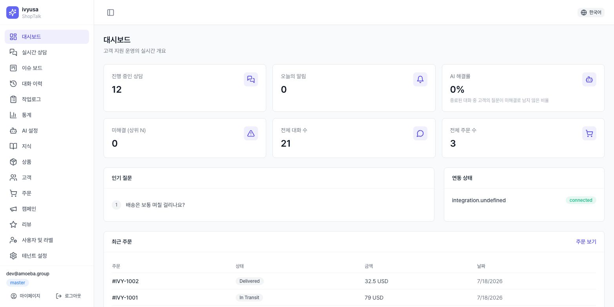

시작하기
1.1 콘솔 접속
- 테넌트 콘솔:
https://shoptalk.amoeba.site/user/<슬러그>— 상점별 전용 로그인 주소 - 플랫폼 관리자:
/admin/login - 초대 계정은 임시 비밀번호로 첫 로그인 후 강제 변경(10자 이상·문자 종류 3종·흔한 비밀번호 금지)
- master/director·시스템 관리자는 MFA(TOTP) 등록 강제 — 등록 시 복구 코드 10개가 한 번만 표시
온보딩 절차 전체: 간단 세팅 매뉴얼 1~2장.
1.2 역할·권한 (RBAC)
- 직급: master · director · manager · staff / 직무 라벨: consult(상담) · accounting(정산) · operations(운영)
- 메뉴 노출은 2계층: ① 플랫폼 관리자의 테넌트 제공 메뉴 → ② 테넌트 master의 직급별 권한 + 사용자별 예외 ([설정]의 메뉴 접근 권한 카드). URL 직접 입력도 서버가 재검증해 차단
- 소유자 가시성 정책(ACL)이 기능 권한 위에 추가 적용
1.3 콘솔 메뉴
사이드바 로고를 클릭하면 접근 가능한 화면 카드 목록(/menu)이 열립니다.
| 메뉴 | 경로 | 용도 |
|---|---|---|
| 대시보드 | /dashboard | KPI·인기 질문·연동 상태 |
| 라이브챗 | /live-chat | 실시간 상담·인계 처리 |
| 이슈 | /issues | 문의 티켓 칸반 보드 (네이티브 워크플로우 테넌트) |
| 상담 이력 | /history | 지난 대화 조회·근거 확인 |
| 작업 로그 | /work-log | 상담원 작업 감사 추적 |
| 통계 | /statistics | 질문 분석·채널·상담원·처리·만족도·시간대 |
| AI 설정 | /ai-setting | 에이전트·페르소나·규칙·시나리오·기본 대화내용·엔진 연결·모더레이션·코칭 |
| 지식 | /knowledge | 지식 보드(/knowledge/board)·문서·소스·검증 |
| 고객 / 주문 / 상품 | /customers /orders /products | 캐시 데이터 조회·관리 |
| 캠페인 / 리뷰 | /campaigns /reviews | 발송·리뷰 관리 |
| 사용자 | /users | 팀원 초대·직급·라벨 |
| 테넌트 설정 | /settings | 7탭: 기본 설정 / 위젯 설정 / 플랫폼 연동 / 마케팅·헬프데스크 / 메신저 채널 / 기타 설정 / 개인정보 안내 |
| 마이페이지 | /my-page | 프로필·비밀번호·MFA |
| 관리자 | /admin/* | 플랫폼 관리 (시스템 관리자 전용) |
고객 위젯
2.1 화면 구성
- 쇼핑몰 페이지의 런처(위치·크기·아이콘은 테넌트 테마 설정) → 패널(모바일 전체 화면 / 데스크톱 플로팅 카드)
- 헤더: 상점 표시 이름(또는 로고), 언어 전환(en/es/ko/vi/ja/zh 6종 — 전환 시 세션 언어도 서버에 반영되어 AI 답변 언어가 바뀜), 환경설정(톱니), 닫기
- 탭: 알림 / 주문 / 채팅 — 노출 탭·순서·위치(상단/하단)는 테넌트 설정을 따름. 탭이 1개뿐이면 탭 바 자체가 숨음
2.2 알림·주문 탭
- 알림 탭 칩: 전체 · 이벤트 / 주문 탭 칩: 주문(주문 목록) · 배송 · 리뷰 · 문의. 한쪽 탭을 끄면 그 칩들이 남은 탭으로 흡수 — 탭을 꺼도 기능은 사라지지 않음
- 항목: 아이콘·제목·상태 배지·본문·상대 시각·안읽음 점. 최신 안읽음 1건 강조
- 주문 상세: 품목·합계·배송 추적 스테퍼·배송조회·이 주문 문의하기(주문번호를 채팅으로 연계)·품목별 리뷰 쓰기(별점 1~5 + 후기)
- 인라인 주문 목록은 최근 구간만 — "더 보기"는 쇼핑몰 자체 마이페이지로 연결(Cafe24는 주문 목록, 그 외는 계정 페이지)
2.3 채팅 탭
- 상단: AI 상담 고지 + 상담 종료 링크(진행 중일 때만)
- 동의 배너: 최초 진입 또는 고지 버전 변경 시 표시 — 동의 전엔 개인정보 기능 제한
- 시나리오 버튼: 테넌트 구성 빠른 메뉴(기본 6종). 상품 도움말은 서브메뉴(사용법·성분·교환/반품·재입고). 답변 뒤 빠른 칩(내 주문/배송/반품/상담원 연결)
- 본인확인 2방식: ① 스토어 로그인 — 리다이렉트(기본)/팝업, Cafe24·Shopify 로그인 경로 자동 처리, 복귀 시 위젯 자동 재오픈 ② 비회원 주문조회 — 주문번호+이메일(횟수 제한)
- 첨부: 이미지 ≤10MB(HEIC 자동 변환) / 파일 ≤20MB(pdf·txt·csv·docx·xlsx), 메시지당 최대 5개
- 대기 표시 3종: AI 생성 중 / 상담원 응대 중 / 인계 대기
- 종료·만족도: 종료된 대화에 24시간 내 만족도(이모지 5단계 = 1~5점) 카드. 새 메시지를 보내면 새 상담 시작


2.4 환경설정(톱니)
- 동의 관리: 상태·일시·버전 확인, 철회(2단계 확인 — 철회 시 상담 중단), 재동의
- 로그인 후: 마케팅 수신 거부(단일 토글 — 프로모션·쿠폰·리뷰 요청 거부, 주문·배송 알림은 무관), 판매·공유 거부(CCPA/CPRA), 내 데이터 내보내기(JSON), 내 데이터 삭제(2단계 확인 — 완료 시 위젯 로그아웃 초기화)
- 카테고리×채널 수신 매트릭스는 위젯에서 제거 — 상점 정책(콘솔 알림 채널 설정)으로 이관
AI 응답 흐름 (요약)
고객 메시지 → 의도 분류(개인정보 필요 시 본인확인 안내)
→ 정책 강제 핸드오프(deny-list) 매칭 시:
「답변 안 함」 규칙 → AI 없이 즉시 상담원 인계
「답변 후 인계」 규칙 → 지식으로 먼저 답한 뒤 그대로 인계
→ 지식 검색(RAG) → 답변 생성(페르소나+규칙, 신뢰도 산정) → 모더레이션
→ 신뢰도 충분: 고객에게 답변+출처 / 부족·차단·고객요청: 상담원 대기열- 상담원 발신 메시지도 모더레이션을 동일하게 통과(우회 불가, 실패 시 차단)
- 각 지점의 조정 방법: 지식·AI 매뉴얼
라이브챗 콘솔
3열 구성: 대기열(좌) — 대화(중) — 컨텍스트(우). 목록은 5초 간격 자동 갱신.
4.1 대기열(좌)
- 범위: 전체 / 상담 필요 / 종료 (기본 전체 — AI 응대 중 대화도 표시). 두 번째 줄의 그룹 탭은 세션 그룹핑(4.5)
- 채널 필터 + AI 에이전트 필터 + 고객명/이메일 검색. 채널: 위젯·텔레그램·바이버·잘로·라인·왓츠앱·위챗·카카오톡·SMS·이메일 — btbz 릴레이 유입도 원 메신저명으로 표시. SMS는 수신 전용 배지
- 각 행: 세션 별칭(인라인 수정 가능), 채널·상태 배지, 배정 AI 에이전트 칩, "자동응답 OFF" 칩, 마지막 메시지, 경과 시간
- 핀: 행 호버로 핀 아이콘 — 핀 대화는 항상 최상단, 팀 공유·스토어당 최대 3개(4번째는 거부)
- 필터·검색 줄은 상단 고정(sticky) — 3개 패널의 내부 영역만 각각 스크롤
4.2 대화(중)
- 자동응답 제어: 채널 기본 따름 / 자동 / 승인 후 발송 / 끄기 + 상태 배지. 상담원이 인수한 대화는 상담원 응대 우선
- 버튼: [접수](인수) · [AI에 반환](상담원 상태에서만, 확인 모달) · [종료] · [동기화] · [핀 고정/해제] · [지정](담당을 다른 AI 에이전트/상담원으로 — AI 에이전트 변경은 다음 응답부터)
- 고객 메시지 액션 4종(고객 말풍선 호버, AI 자동응답 중엔 숨김): 번역(콘솔 전용 번역 말풍선) · 지식 조회(우측 패널로 복사·질의) · 답글 달기(인용 칩 → 발송 시 조립) · 이 메시지를 이슈로 등록(발췌+유형+메모, 기존 이슈엔 메모로 추가)
- 승인 후 발송 모드: AI 초안을 편집 가능한 패널로 검토(신뢰도 표시) → [승인 발송](상담원 명의, 모더레이션·감사 동일) / [폐기]
- 메시지 작성: 텍스트 + 첨부(위젯과 동일 한도). 전송 거부 = 모더레이션 차단. SMS 채널은 수신 전용(작성 비활성)
- AI 말풍선 아래 [이 답변을 지식으로](master/director) — 지식 문서 초안 캡처
4.3 컨텍스트(우)
- AI 브리핑: 요약·의도·감정·권장 조치 (그룹 선택 시 이 자리가 고객여정분석 패널로 바뀜 — 4.5)
- 지식 조회: 대화 중 지식에 직접 질문 → 답변·출처(stale/충돌 배지) → [고객에게 전송] / [수정 후 전송] / [지식으로 제안](승인 대기 등록)
- 고객 카드: 이름·이메일·전화·등급 + 고객 매칭/생성 · 최근 주문 카드
- 이슈 패널(네이티브 워크플로우): 이슈 번호·상태·유형·재오픈 수, [해결]/[반려](사유 필수), 담당 재배정, 이벤트 타임라인

4.4 인계 알림·자동 마무리
- 에스컬레이션 알람: 새 인계 발생 시 10초 내 알림 모달(사유: 낮은 신뢰도/모더레이션 차단/고객 요청) → [채팅 열기]
- 방치 자동 마무리(서버, 위젯 채널만): 양측 30분 무응답 → "더 도와드릴 일이 있을까요?" → 1분 내 무응답 시 종료. 7일 초과 대화는 조용히 종료. 이메일 회신 대기 대화는 자동 종료 안 함
4.5 세션 그룹핑·고객여정분석
- 목록 헤더 [선택] → 세션 2개 이상 체크 → [그룹으로 묶기]: 타임라인(한 고객의 여러 세션) / 프로젝트(같은 건의 여러 당사자) — 새 그룹 또는 기존 그룹에 추가
- 그룹 룸(그룹 탭): 멤버 세션 통합 타임라인. 발신은 1:1 — 수신 대상 지정 필수. 그룹 해제해도 대화·메시지는 보존
- 고객여정분석: [리포트 생성] → ① 요약 ② 접촉 이력 ③ 무엇을 묻는가 ④ 해결 소요시간 ⑤ 관계 단계(5A) ⑥ 욕구 단계(가설) ⑦ 다음 행동. 수치는 코드가, 서술만 AI가. 리포트 2개 비교(심화분석) 가능
- 작성 기준(절 on/off·샘플 상한·금지 표현)은 [테넌트 설정 → 기타 설정]의 여정분석 작성 기준(master) — 저장 시 새 버전, 기존 리포트는 유지
이슈 보드
- 칸반 컬럼: 접수 → 진행중 → 해결/반려 → 종결 (허용된 이동만 드래그 — 터치는 카드의 이동 선택 상자)
- 상단 KPI: 접수·진행중·미배정·평균 해결 시간·재오픈률 (30초 갱신)
- 카드: 이슈 번호·유형·SLA 배지(⚠️ 임박 / 🔥 초과)·재오픈 수·세션 별칭·고객 마지막 발언·담당·긴급/보통 토글
- 반려는 사유 필수(정책상 불가/오배정/스팸 + 메모). 해결/반려 후 재오픈 가능
- 카드 클릭 → 최근 10턴 미리보기(읽기 전용, 조회는 감사 기록) → [세션 열기]
- 라이브챗의 [이 메시지를 이슈로 등록](4.2)으로도 이슈 생성
- SLA 기준 시간(일반/긴급, 1~168h, 기본 24h/4h)은 [테넌트 설정 → 기본 설정]의 상담원 연결 카드에서 설정
- 워크플로우 모드(native 여부)는 플랫폼 관리자의 요금제/애드온 설정(16장) — 메뉴만 제공되고 모드가 아니면 안내 화면만 표시
상담 이력
- 필터: 기간 · 담당자(consult 라벨) · 상태 · 에스컬레이션 · 메시지 본문 검색(버튼 실행 — 감사 기록 대상) · 미리보기 대화 포함
- 행 클릭 → 대화 전문: 고객/담당자/채널/언어/시작·종료 + 발화별 말풍선. AI 답변마다 근거 문서 칩(제목+유사도, 지식 문서로 이동)과 신뢰도 배지 — 왜 그렇게 답했는지 추적 가능. 인계 시점에 사유 배지
- 조회 사실은 감사 기록에 남음. 내보내기(CSV 등)는 🟡 미제공
작업 로그
상담원 작업의 감사 추적(관리자 감사 로그와 같은 저장소의 상담원 렌즈). 필터: 기간·상담원·액션(접수/메시지 발송/고객 연결/고객 생성/종료/대화 조회/전문 조회). 컬럼: 시간·상담원·액션·대상·결과(성공/실패).
통계
- 섹션 6개 — 질문 분석 / 채널 / 상담원 / 처리 / 만족도 / 시간대
- 질문 분석: 하위 탭 4개(의도/사용된 지식/키워드/유사질문 그룹) + 추이 차트. ⚠ 행 = 이관율 높거나 신뢰도 낮음 — 지식 보강 우선순위. 일별 스냅샷이라 로그 삭제 후에도 유지, 집계 2일+ 멈추면 경고 배너
- 채널: 대화 수·고객 메시지·대화당 메시지(중앙값)·상담원 인계 — 중앙값을 먼저(초대형 대화가 평균 왜곡)
- 상담원: AI 에이전트 표 + 사람 상담원 표(대화·답변·해결·만족도, 평가 건수 병기)
- 처리: 해결(고객 평가/상담원 종료/확인 후 종료) vs 미해결(진행 중/종료 처리 없음/고객이 마지막 발화) — 여정 리포트·대시보드와 같은 정의
- 만족도: 평균·응답 수·응답률·분포 + 상담원별/세션별 표
- 시간대: 요일×시간 그리드 — 테넌트 시간대 기준(미설정 시 UTC 경고)
- 채널·상담원·처리·시간대는 로그 직접 계산 — 보존기간 밖 과거는 조회 불가(질문 분석·만족도는 스냅샷)

대시보드
KPI 6종(각각 해당 화면으로 링크): 진행 중 상담 · 오늘 알림 · AI 해결률 · 미해결 Top N · 총 대화 · 총 주문. AI 해결률 = 종료된 대화 중 고객 질문이 미해결로 남지 않은 비율(통계 처리·여정 리포트와 동일 정의) — 대화 수는 미리보기 세션 제외. 인기 질문 순위, 연동 상태(제공사별 배지 — 저장이 아니라 연결 테스트 통과 기준), 최근 주문 5건.

고객·주문·상품
10.1 고객 (/customers)
목록(이름·이메일·등급·주문 수·총 구매액·가입일) + 이메일 검색. 편집 가능한 것은 등급 변경(guest/subscriber/regular)뿐 — 등급은 위젯·AI 응대의 고객 구분에 사용.
10.2 주문 (/orders)
플랫폼에서 동기화된 주문의 읽기 전용 목록(주문번호·상태·금액·품목 수·날짜).
10.3 상품 (/products)
- 동기화된 상품 카탈로그(보관 상품 포함). KPI: 전체·활성·보관·지식 등록 수(마지막 동기화 시각)
- 지식 등록 여부 배지가 중요 —
없음인 상품은 AI가 답변에 쓸 수 없음. 설명이 아예 없는 상품은 지식으로 변환되지 않음(상세에 명시) - 지식 반영 절차(카탈로그 동기화): 지식·AI 매뉴얼 2.2장
캠페인
- 생성 필드: 이름 · 채널(email / sms / kakao) · 메시지 · 링크(없음 / 상품 핸들 / https URL — 발송 시점 검증)
- 목록의 [발송]은 즉시 발송(확인 창 없음) — 주의
- 🟡 예약 발송·오디언스 빌더 UI는 로드맵 — 현재는 생성 → 즉시 발송
리뷰
위젯에서 고객이 남긴 상품 리뷰의 관리 목록(고객·주문 항목·별점·본문·상태). 유일한 액션은 숨김 ↔ 숨김 해제 — 숨겨도 작성자 본인에게는 계속 보입니다(스토어 노출만 제외).
지식·AI 설정
지식 등록(수동/카탈로그/CSV/외부 소스), 검증(QA 패널·충돌 검토·공백 제안), AI 설정(에이전트·페르소나·규칙·시나리오·엔진·모더레이션·답변 재사용), 개선 루프(미리보기·코칭·회귀 테스트) 전체가 지식 등록·AI 설정 매뉴얼에 정리되어 있습니다.
- AI는 활성 지식 문서에서만 답합니다 — 인계가 잦으면 지식 부족이 원인
- 지식은 Smart Knowledge Board(
/knowledge/board)에서 먼저 작성·검토 후 KB 채택(채택 전 시뮬레이션) — 직접 추가는 긴급 수정용 - 그룹 3종(CounselInfo/ProductInfo/OperationInfo) × 카테고리 — 카테고리의 에이전트 범위로 특정 에이전트에게만 노출 가능
- 일괄 도구: 일괄 다운로드 ↔ 일괄등록(CSV/XLSX 라운드트립) · AI 임포트(pdf·docx·xlsx·csv·md·YouTube 자막 → 초안 검토 → 보드 게시)
- 모든 발신(AI·상담원)은 모더레이션을 통과 — 오류 시 안전하게 차단
- AI 코칭·설정 변경은 승인 게이트를 거침 — 제안을 검토 후 적용
테넌트 설정
/settings는 7개 탭으로 재편(구 단일 "환경설정"). 탭도 제공 메뉴 단위 — 제공되지 않은 탭은 보이지 않습니다.
| 탭 | 내용 |
|---|---|
| 기본 설정 | AI 엔진(테넌트 자체 엔진 — 플랫폼 엔진보다 우선, 연결 테스트·기본값) · AI 사용량(호출/토큰 집계, stub 폴백 경고) · 스토어프론트 · 상담원 연결(담당자·근무시간·휴게·영업외 이메일/문구·SLA·deny-list) |
| 위젯 설정 | 테마 · 탭 구성 · 동작(인사말 — 6개 언어 탭, 기본 문구 표시) · 임베드/SDK · 설치 가이드 |
| 플랫폼 연동 | Shopify·Cafe24·WooCommerce·Odoo·Haravan 타일 + [연동 가이드] 버튼 |
| 마케팅·헬프데스크 | Klaviyo · Yotpo · Gorgias |
| 메신저 채널 | 텔레그램·바이버·아메바톡 허브·btbz 릴레이·지메일 |
| 기타 설정 | 알림 채널 · 메뉴 접근권한(master) · 여정분석 작성 기준(master) · 저장된 자격증명 |
| 개인정보 안내 | 처리방침 URL · 동의 안내 버전 |
- 저장 ≠ 연결: 저장 시 "미테스트" — [연결 테스트] 통과해야 "연결됨"(실패 시 "오류")
- Odoo·Woo·Haravan은 모달의 [상품 가져오기]/[주문 동기화](Cafe24는 OAuth 카드, Shopify는 [지금 동기화]+[웹훅 등록]) — AI 활용은 [지식] 카탈로그 동기화 별도
- deny-list 규칙별 모드 2종: 답변 안 함(즉시 인계, 기본) / 답변 후 인계(지식으로 답한 뒤 인계) — 어느 쪽이든 상담원 호출
개인정보 고지·마이페이지
- 개인정보 안내([테넌트 설정]의 탭,
/settings/privacy— 구/privacy-notice는 자동 이동, master/director): 처리방침 URL과 동의 고지 버전 관리 - 마이페이지(
/my-page): 프로필(직급·라벨·워크스페이스), 비밀번호 변경, MFA 등록/해제
모든 고객에게 동의 배너가 다시 표시됩니다. 실제 고지 변경 시에만 올리세요.
플랫폼 관리자 콘솔
| 화면 | 경로 | 용도 |
|---|---|---|
| 개요 | /admin | 테넌트 수·연동 상태 |
| 테넌트 | /admin/tenants | 생성(이름·슬러그·도메인·요금제) · 요금제/애드온 · 제공 메뉴 · 정지/활성화 |
| 테넌트 사용자 | /admin/tenants/…/users | 초대 · 임시 비밀번호 발급(1회 표시·메일 발송 없음) · MFA 리셋 · 정지 |
| AI 엔진 | /admin/ai-engines | 엔진 등록(제공사·모델·API 키)·활성 관리 — 테넌트가 기능별로 선택 |
| 감사 로그 | /admin/audit | 특권 작업 추적(임시비번 발급·권한 변경·PII 조회 등) |
요금제/애드온 모달: 요금제(starter/growth/enterprise/custom — 플랜별 메뉴 프리셋, 오버라이드는 유지) + 이슈 워크플로우 애드온(base 미사용 / bridge 외부 헬프데스크 / native 이슈보드·칸반). base 아닌 모드는 "이슈: {모드}" 배지.
테넌트 개설 절차 상세: 간단 세팅 매뉴얼 1장.

FAQ / 문제 해결
- Q. 봇이 계속 상담원에게 넘깁니다.
- 지식 부족이 가장 흔한 원인입니다. 통계의 ⚠ 행과 지식 QA 패널로 원인을 확인하고 문서를 보강하세요. deny-list 키워드인지도 확인 — "답변 안 함" 규칙은 AI를 건너뛰고, "답변 후 인계" 규칙은 답해도 상담원을 호출합니다. 카테고리의 에이전트 범위가 지금 에이전트에게 그 지식을 가리는 경우도 있습니다.
- Q. 상담원 답변이 전송되지 않습니다.
- 모더레이션 차단입니다. 표현을 바꿔 재시도하고, 규칙이 과하면 master에게 조정을 요청하세요.
- Q. 대화가 저절로 종료됐습니다.
- 방치 대화 자동 마무리입니다(30분 무응답 → 안내 → 종료). 고객이 다시 메시지를 보내면 새 상담이 시작됩니다.
- Q. 이슈 보드가 안 보입니다.
- 워크플로우 모드가 네이티브인 테넌트 전용입니다 — 어드민 요금제/애드온에서 native인지 확인하세요. 메뉴 자체가 없다면 제공 메뉴/직급 권한(2계층)을 확인하세요.
- Q. 설정 화면이 예전 설명과 다릅니다.
- 2026-08-24 이후 /settings가 7개 탭(테넌트 설정)으로 재편되었습니다(14장). 상담 전환은 기본 설정 탭의 상담원 연결 카드, 메뉴 접근 권한은 기타 설정 탭으로 이동했습니다.
- Q. 대시보드·통계 숫자가 예전보다 줄었습니다.
- 정상일 수 있습니다 — 대화 수에서 미리보기 세션이 제외되었고, "해결" 정의 통일로 고객이 마지막으로 말한 대화는 해결로 세지 않습니다(8·9장).
- Q. 위젯 설정을 바꿨는데 반영이 안 됩니다.
- 위젯은 고객의 다음 세션부터 새 설정을 읽습니다. 위젯을 닫았다 열거나 새로고침하세요.
- Q. 고객이 알림(이메일 등)을 못 받습니다.
- ① 콘솔 알림 채널 정책에서 해당 채널이 켜져 있는지 ② 고객이 마케팅 수신 거부를 했는지(프로모션류만 영향) 확인하세요. 상점이 끈 채널은 고객이 켤 수 없습니다.
- Q. temperature를 바꿨는데 답변이 그대로입니다.
- Anthropic(Claude) 엔진에는 temperature가 적용되지 않습니다(모델이 거부하므로 전송하지 않음). max_tokens만 유효합니다.
- Q. AI 키가 없는데도 동작합니다.
- 스텁(stub) 어댑터의 데모 응답입니다. 실서비스 전 반드시 실제 엔진을 등록·지정하세요.
- Q. 리뷰를 숨겼는데 고객에게는 보입니다.
- 정상입니다 — 숨김은 스토어 노출만 제외하며 작성자 본인에게는 유지됩니다.